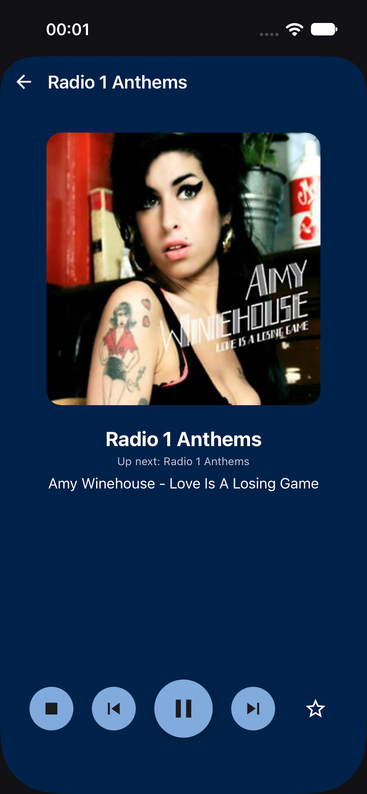
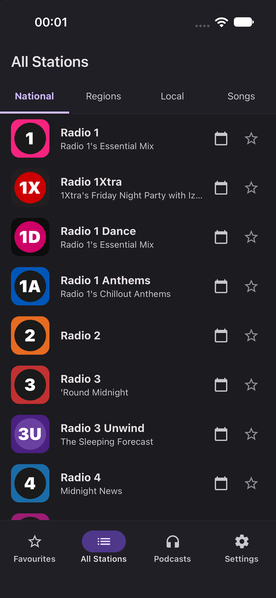
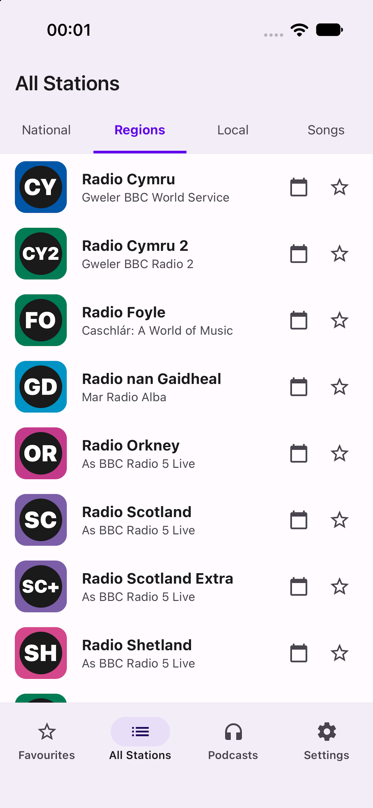
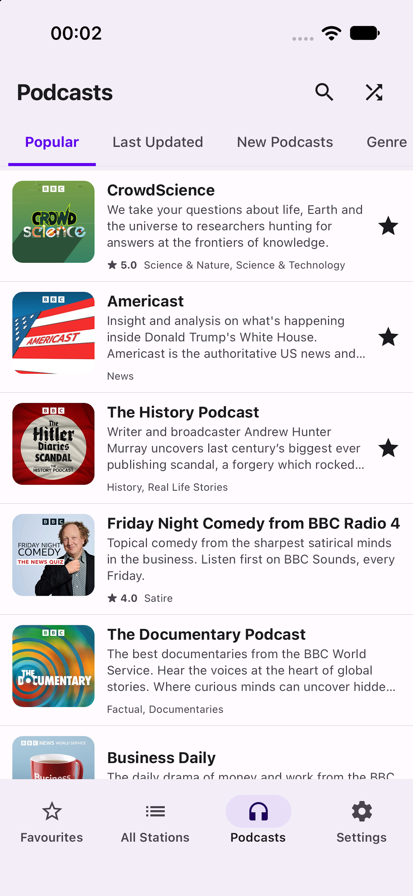
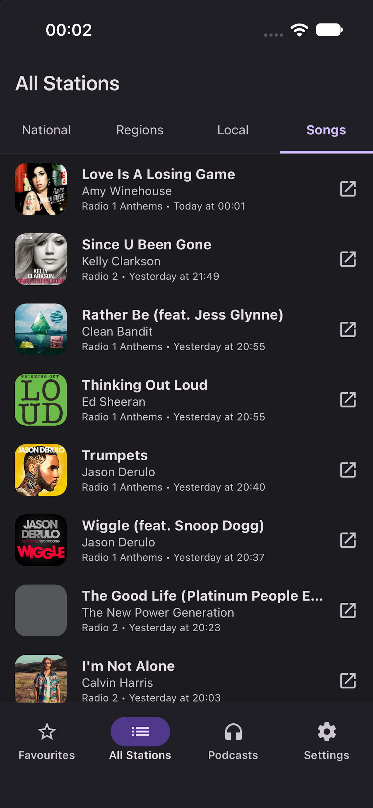
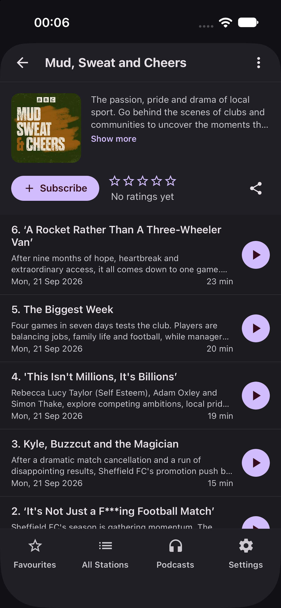
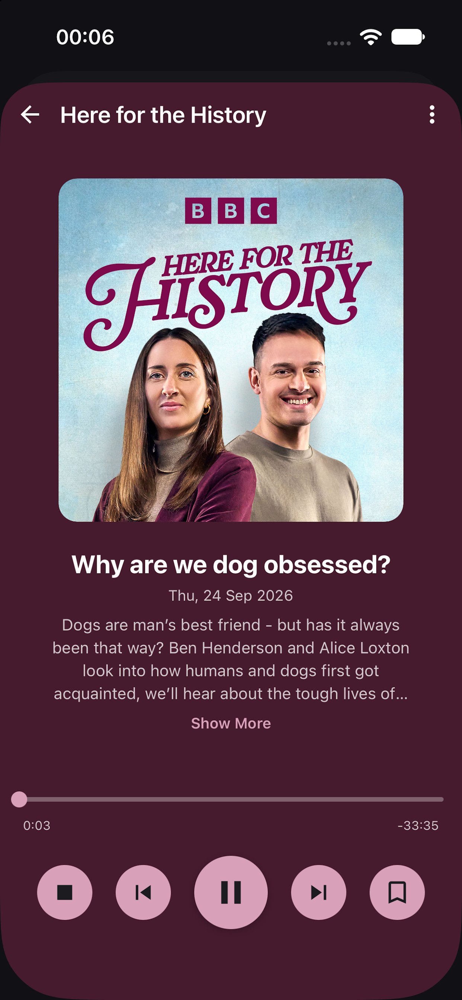
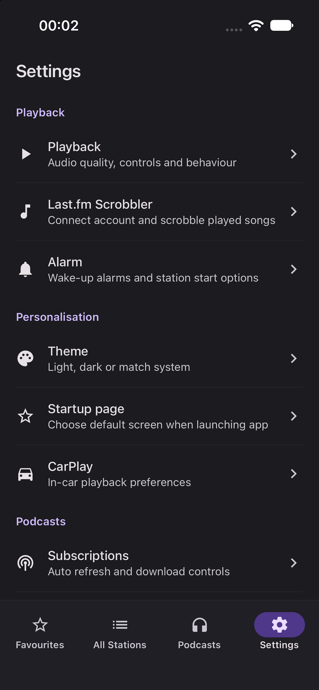

The elegant, lightweight, and privacy-focused player for British live radio and BBC podcasts. Stream every national, regional, and local station in pristine audio quality with live track information, Apple CarPlay support, custom radio alarms, and zero ads.

Crafted natively for iOS with performance, aesthetics, and privacy in mind.
Stream national stations (Radio 1, Radio 2, Radio 3, Radio 4, 5 Live, 6 Music, 1Xtra, World Service), regional stations (Scotland, Wales, Ulster, Cymru), and all local stations in high-bitrate audio.
Instantly see current song titles, artist names, and high-resolution album artwork. Browse recently played tracks from earlier in the broadcast and jump straight to your favorite music app.
Discover thousands of BBC podcasts organized by Popular, Recently Updated, New Releases, and Genres. Subscribe, track episode progress, and download episodes for seamless offline listening.
Take your favorite stations on the road. Enjoy full CarPlay integration with a clean, driver-friendly interface for browsing your favorites, live stations, and podcast subscriptions safely while driving.
Wake up gently to your preferred morning radio show instead of a standard alarm buzzer. At night, drift off peacefully with a configurable sleep timer that fades out audio automatically.
Never lose track of the music you hear on BBC radio. Built-in Last.fm scrobbler syncs tracks played during live broadcasts directly to your Last.fm profile in real time.
Beautiful iOS styling tailored for both daytime and nighttime listening. Switch easily between modern deep dark mode, crisp light mode, or automatic system matching.
No advertisements, no subscriptions, no paywalls, and no third-party trackers. All favorites and progress stay stored on your device. Free and open source for everyone.
Experience a clean, responsive iOS interface designed specifically for live streams and podcasts.
Select any screen below to explore British Radio Player's core interfaces.







Find quick answers regarding features, audio playback, CarPlay, and support.
British Radio Player is 100% free of charge. There are no paid subscriptions, no paywalls, no in-app purchases, and no advertisements whatsoever. It is built as an independent open-source application for the love of British radio and podcasts.
Yes! The vast majority of live BBC radio stations (including Radio 1, Radio 2, Radio 3, Radio 4, 6 Music, World Service, and regional stations) and the entire BBC podcast library are accessible worldwide without restrictions.
Note: Certain live sporting events broadcast on BBC Radio 5 Live and 5 Sports Extra may have geo-licensing limitations enforced by the BBC. For these broadcasts, the app automatically switches to international streams when available.
British Radio Player supports Apple CarPlay natively. When you connect your iPhone to a CarPlay-compatible vehicle (either via Lightning/USB-C cable or wireless CarPlay), the app will appear on your vehicle's dashboard.
From CarPlay, you can easily tap into your Favourites, browse all live radio stations, access subscribed podcasts, and control playback using physical steering wheel controls or your vehicle's touchscreen.
Yes. British Radio Player is built with full background audio capabilities. You can switch to other apps, lock your screen, or use navigation apps while audio continues playing without interruption.
Lock Screen controls, Dynamic Island, and Control Centre media controls provide play/pause, station switching, track titles, and high-resolution album artwork.
To configure a wake-up radio alarm, navigate to Settings > Alarm inside the app. Toggle the alarm on, set your desired wake-up time, and select the BBC radio station you'd like to wake up to. Make sure notifications are permitted so the alarm can alert you at your scheduled time.
Open Settings > Last.fm Scrobbler and enter your Last.fm account details. When listening to music-focused stations (like Radio 1, Radio 2, Radio 6 Music, or 1Xtra), each song broadcast with metadata is automatically scrobbled directly to your Last.fm profile as you listen.
Yes. Tap into any podcast series, find the episode you want, and tap the download icon. The audio file will be saved locally on your device so you can enjoy offline playback while commuting or travelling without mobile data.
No. British Radio Player is an independent, unofficial third-party application developed by Shai Vure. It is not affiliated with, endorsed by, or authorized by the British Broadcasting Corporation (BBC). All BBC station names, logos, and audio streams are trademarks and property of the BBC.
We are here to help. Reach out directly with bug reports, feature suggestions, or questions.
Fast support directly from the developer
For inquiries, troubleshooting assistance, or feedback, send an email to:
Bug reports & feature requests
Prefer public tracking? Report bugs, view changelogs, or track upcoming features on our open GitHub repository issue tracker.
Open Issue on GitHubShare your feedback
Enjoying British Radio Player? Leaving an honest rating or review on the Apple App Store helps fellow UK radio enthusiasts find the app.
Rate on App StoreBritish Radio Player is built with strict privacy standards. We believe you should be able to listen to live radio and podcasts without being tracked, monitored, or served targeted advertisements.
We do not collect names, email addresses, phone numbers, contacts, device IDs, or location data.
Zero third-party tracking frameworks (no Firebase Analytics, Google Analytics, Facebook SDKs, or ad networks).
Your favorite stations, downloaded episodes, playback progress, and app preferences are stored exclusively on your device.
Optional playback telemetry is disabled by default and collects only aggregated station IDs and timestamps without personal identifiers.